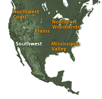

|

|
|
Result of Contact
The Spanish were the first Europeans to occupy the Southwest in the 16th century. They
introduced horses as well as livestock (sheep and cattle) and fruit orchards to the area. They
also exploited the native people by using them as unpaid laborers, imposing different cultural
practices on them, and encroaching on their lands. This resulted in a revolt in 1680, when the
native Pueblo people drove out the Spanish, who did not regain control until 1694. From that time
on, the Southwest was under the control of first Spain, then Mexico, and eventually the United
States.
Through a combination of epidemic disease and the impact
of Spanish control, Pueblo populations were reduced by two-thirds within
two centuries following the arrival of the Spanish. The Diné (Navajo),
who had assimilated some aspects of the Pueblo culture and depended upon
them for trade, were eventually driven north by incoming settlers and
forced to resort to raiding in order to survive. As more white settlers
from the east arrived in the 19th century, the U.S. government took steps
to halt the raiding. Under the leadership of Kit Carson, the army destroyed
Diné crops and livestock, forcing the people to surrender. The Diné were
imprisoned on a barren reservation at Bosque Redondo in New Mexico. Five
years later, the Diné were reduced to such a small number that they no
longer posed a threat and were consequently allowed to return to their
homeland, which by then was surrounded by white settlements. Despite this
history of oppression, the Diné nation is one of the largest of
all American Indian nations today, numbering over 100,000 people.
The Southwest Today
Although the culture of the people of the Southwest was vastly disrupted by the arrival of
Europeans, they have managed to retain many of the artistic traditions of their ancestors and to
develop new skills. Pueblo potters of the Southwest initiated a revival of pottery in the early
20th century. Many contemporary Pueblo potters continue to make their pottery by the ancient
coiling
method. The weaving techniques of Diné women are largely unchanged since they learned
the art from the Pueblo men centuries ago. From the earliest times, Diné people made jewelry
from natural materials. After they learned silversmithing from Mexican artisans, they began to
produce silver jewelry. A'shiwi (Zuni) and Hopituh (Hopi) artists learned the skill from Diné smiths. Native
American artists of the Southwest today continue to create the arts for which they are famous.
Tribal Web Sites
Navajo tribal web site: http://www.navajo-nsn.gov/
Hopi tribal web site: http://www.hopi-nsn.gov/
|